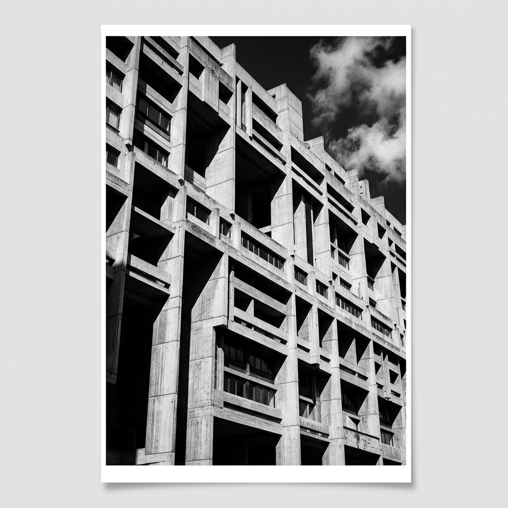

This demo proves mastery over CSS Grid. By utilizing a strict 12-column mathematical layout, the design achieves an asymmetrical yet perfectly balanced aesthetic that is characteristic of the International Typographic Style.
Ideal for B2B corporate sites, consulting firms, and architectural agencies that require a highly trustworthy, logical, and robust digital presence.